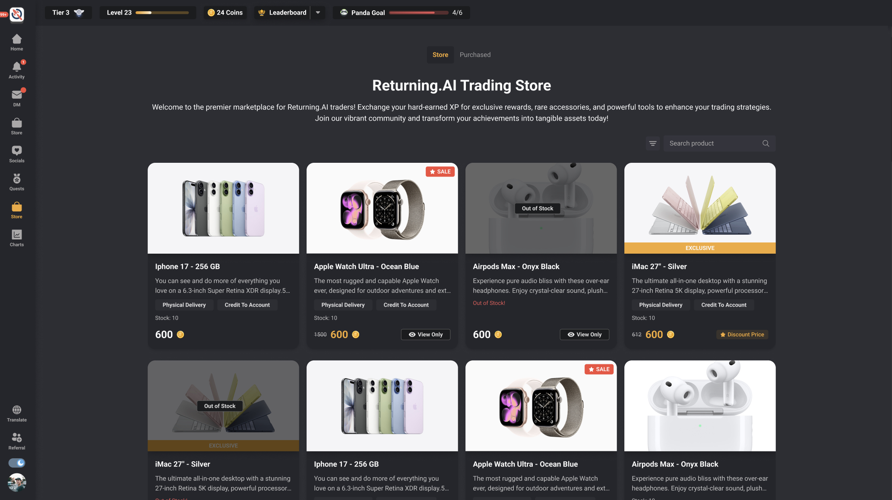
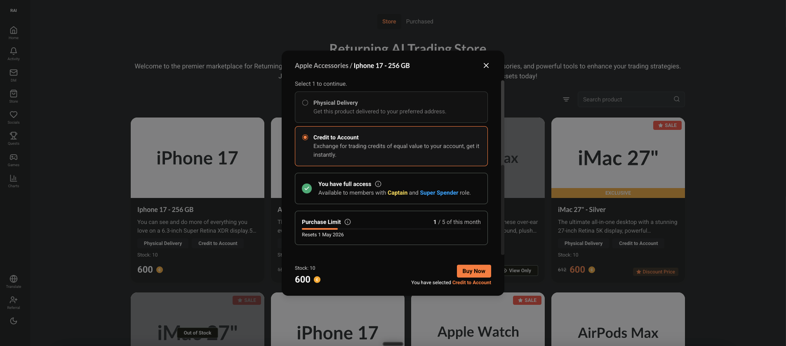
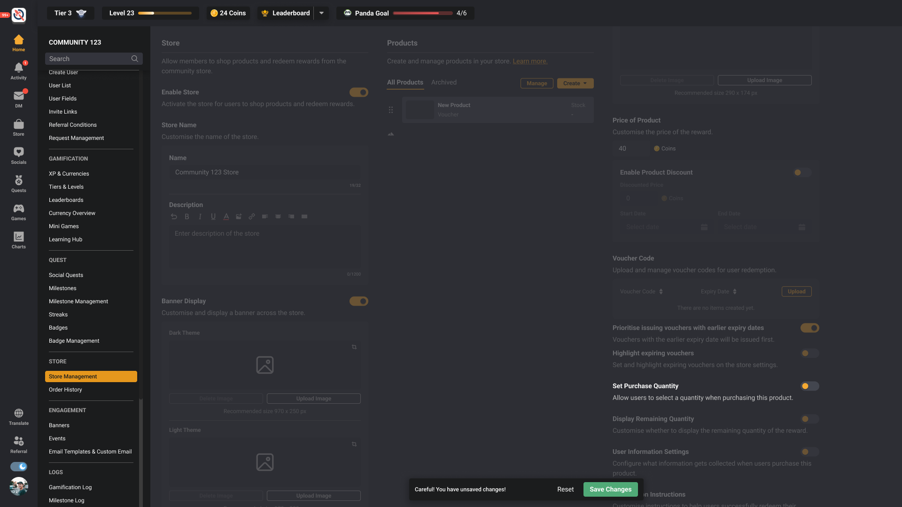
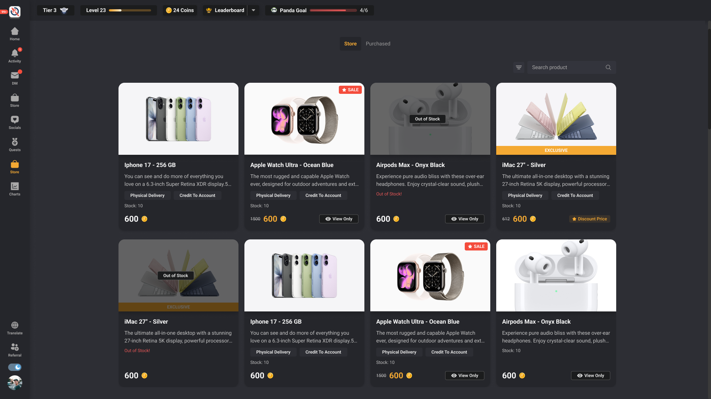

Access before aesthetics
Separate no access, view only and full access so the system never promises an action a role cannot complete.
Flagship case / commerce system
The Store was not one shopping flow. It was a network of role permissions, product eligibility, redemption methods, field requirements and operational states. I made that logic visible and buildable.
Evidence boundary. This case combines preserved interface evidence with a private product-logic reconstruction. It demonstrates the decisions and delivery model; it does not claim that the complete redesign shipped or that business outcomes were measured.

A familiar commerce UI can hide contradictory behavior: who sees the Store, which products they can open, how they pay, and what administrators must configure. I mapped these as linked decisions before treating them as screens.
Separate no access, view only and full access so the system never promises an action a role cannot complete.
Resolve Store defaults through Category and Product overrides while preserving a clear source of truth.
People see accurate actions; operators can explain why a product, method or field appears.
I separated role access from product-level eligibility. That made room for legitimate states such as a discoverable catalogue with disabled checkout, without collapsing everything into “hidden” or “available.”
Permission states become an intentional product language across catalogue, product detail and checkout—instead of ad hoc exceptions in each screen.

Store-level configuration provides a safe baseline. Categories and products can override it when the business rule becomes more specific. The model is simple to describe because the precedence is explicit.
Synthetic explanatory model based on the reconstructed logic—not a production backend simulation.
The safe sequence starts with permissions and configuration, then validates catalogue behavior, then checkout. Otherwise the customer surface can look complete while the operational model remains brittle.


The strongest outcome is not a vanity metric. It is a more explicit commerce model, enough specification for implementation, and a working Store Widget slice with recorded build evidence.
Access, redemption, field display, order state and administrative behavior made reviewable.
Recorded commit evidence across 49 changed files with tests, typecheck and build reported green.
The archive does not support claiming the full redesign shipped or produced measured business impact.